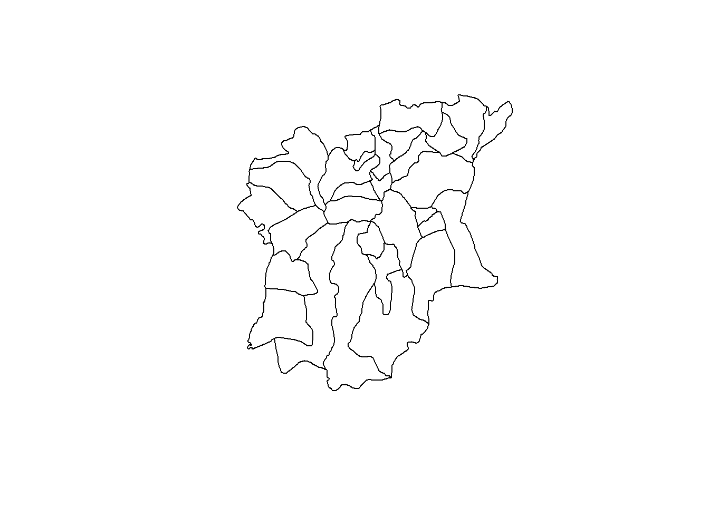
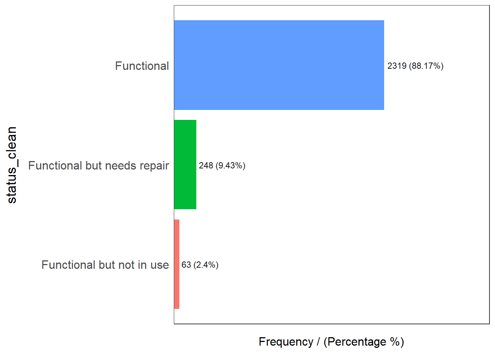
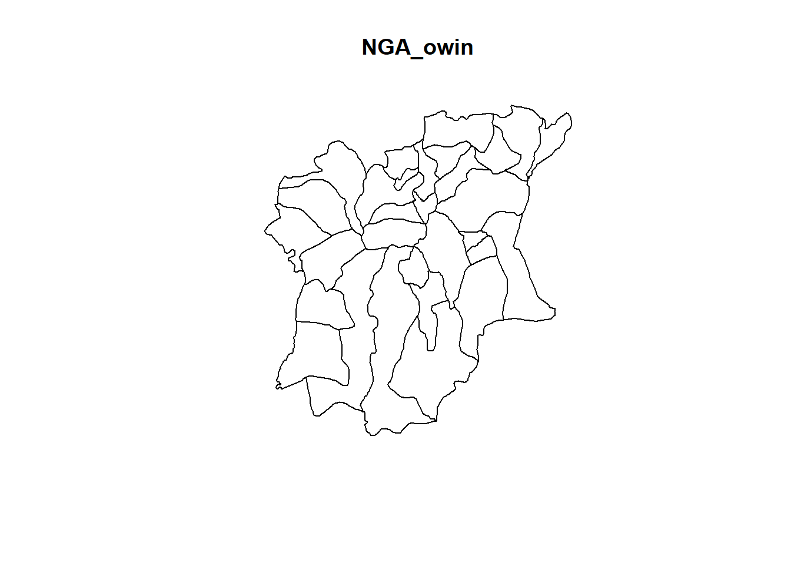
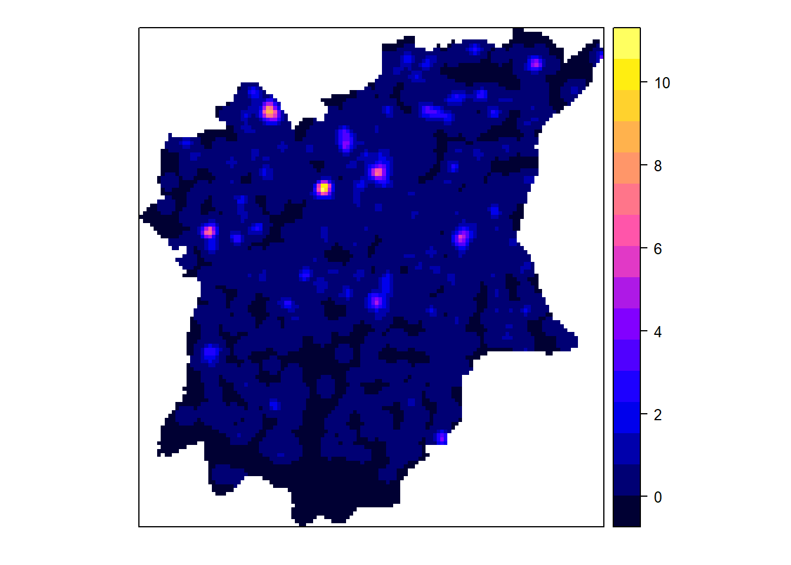
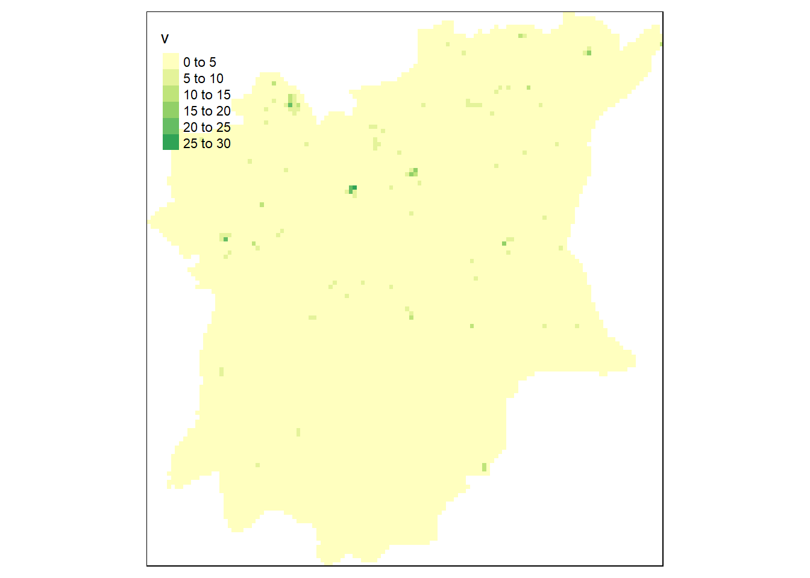

pacman::p_load(sf, maptools, raster, spatstat, tmap, kableExtra, tidyverse, funModeling)Take-Home Excercise 01
1.0 Overview
Talk about water situation in Nigeria
Talk about water situation in Oson state
Talk about the Osun river and its myth
Objective of the assignment and elaborate

2.0 Setup
2.1 Packages Used
sf : Used for ..
tidyverse : Used for ..
tmap :
spatstat :
raster :
maptools :
rgdal :
2.2 Datasets Used
# initialise a dataframe of our geospatial and aspatial dataset details
datasets <- data.frame(
Type=c("Geospatial",
"Geospatial",
"Geospatial",
"Geospatial",
"Geospatial",
"Geospatial",
"Geospatial",
"Geospatial",
"Geospatial",
"Geospatial",
"Geospatial",
"Geospatial",
"Geospatial",
"Geospatial",
"Aspatial"),
Name=c("geoBoundaries-NGA-ADM2",
"geoBoundaries-NGA-ADM2",
"geoBoundaries-NGA-ADM2",
"geoBoundaries-NGA-ADM2",
"geoBoundaries-NGA-ADM2",
"geoBoundaries-NGA-ADM2",
"nga_admbnda_adm2_osgof_20190417",
"nga_admbnda_adm2_osgof_20190417",
"nga_admbnda_adm2_osgof_20190417",
"nga_admbnda_adm2_osgof_20190417",
"nga_admbnda_adm2_osgof_20190417",
"nga_admbnda_adm2_osgof_20190417",
"nga_admbnda_adm2_osgof_20190417",
"nga_admbnda_adm2_osgof_20190417",
"WPdx"),
Format=c(".dbf",
".geojson",
".prj",
".shp",
".shx",
".topojson",
".CPG",
".dbf",
".prj",
".sbn",
".sbx",
".shp",
".shp",
".shx",
".csv"),
Source=c("[geoBoundaries](https://www.geoboundaries.org/index.html#getdata)",
"[geoBoundaries](https://www.geoboundaries.org/index.html#getdata)",
"[geoBoundaries](https://www.geoboundaries.org/index.html#getdata)",
"[geoBoundaries](https://www.geoboundaries.org/index.html#getdata)",
"[geoBoundaries](https://www.geoboundaries.org/index.html#getdata)",
"[geoBoundaries](https://www.geoboundaries.org/index.html#getdata)",
"[Humanitarian Data Exchange](https://data.humdata.org/dataset/cod-ab-nga)",
"[Humanitarian Data Exchange](https://data.humdata.org/dataset/cod-ab-nga)",
"[Humanitarian Data Exchange](https://data.humdata.org/dataset/cod-ab-nga)",
"[Humanitarian Data Exchange](https://data.humdata.org/dataset/cod-ab-nga)",
"[Humanitarian Data Exchange](https://data.humdata.org/dataset/cod-ab-nga)",
"[Humanitarian Data Exchange](https://data.humdata.org/dataset/cod-ab-nga)",
"[Humanitarian Data Exchange](https://data.humdata.org/dataset/cod-ab-nga)",
"[Humanitarian Data Exchange](https://data.humdata.org/dataset/cod-ab-nga)",
"[ WPdx Global Data Repositories](https://www.waterpointdata.org/access-data/)")
)
# with reference to this guide on kableExtra:
# https://cran.r-project.org/web/packages/kableExtra/vignettes/awesome_table_in_html.html
# kable_material is the name of the kable theme
# 'hover' for to highlight row when hovering, 'scale_down' to adjust table to fit page width
library(knitr)
library(kableExtra)
kable(datasets, caption="Datasets Used") %>%
kable_material("hover", latex_options="scale_down")| Type | Name | Format | Source |
|---|---|---|---|
| Geospatial | geoBoundaries-NGA-ADM2 | .dbf | [geoBoundaries](https://www.geoboundaries.org/index.html#getdata) |
| Geospatial | geoBoundaries-NGA-ADM2 | .geojson | [geoBoundaries](https://www.geoboundaries.org/index.html#getdata) |
| Geospatial | geoBoundaries-NGA-ADM2 | .prj | [geoBoundaries](https://www.geoboundaries.org/index.html#getdata) |
| Geospatial | geoBoundaries-NGA-ADM2 | .shp | [geoBoundaries](https://www.geoboundaries.org/index.html#getdata) |
| Geospatial | geoBoundaries-NGA-ADM2 | .shx | [geoBoundaries](https://www.geoboundaries.org/index.html#getdata) |
| Geospatial | geoBoundaries-NGA-ADM2 | .topojson | [geoBoundaries](https://www.geoboundaries.org/index.html#getdata) |
| Geospatial | nga_admbnda_adm2_osgof_20190417 | .CPG | [Humanitarian Data Exchange](https://data.humdata.org/dataset/cod-ab-nga) |
| Geospatial | nga_admbnda_adm2_osgof_20190417 | .dbf | [Humanitarian Data Exchange](https://data.humdata.org/dataset/cod-ab-nga) |
| Geospatial | nga_admbnda_adm2_osgof_20190417 | .prj | [Humanitarian Data Exchange](https://data.humdata.org/dataset/cod-ab-nga) |
| Geospatial | nga_admbnda_adm2_osgof_20190417 | .sbn | [Humanitarian Data Exchange](https://data.humdata.org/dataset/cod-ab-nga) |
| Geospatial | nga_admbnda_adm2_osgof_20190417 | .sbx | [Humanitarian Data Exchange](https://data.humdata.org/dataset/cod-ab-nga) |
| Geospatial | nga_admbnda_adm2_osgof_20190417 | .shp | [Humanitarian Data Exchange](https://data.humdata.org/dataset/cod-ab-nga) |
| Geospatial | nga_admbnda_adm2_osgof_20190417 | .shp | [Humanitarian Data Exchange](https://data.humdata.org/dataset/cod-ab-nga) |
| Geospatial | nga_admbnda_adm2_osgof_20190417 | .shx | [Humanitarian Data Exchange](https://data.humdata.org/dataset/cod-ab-nga) |
| Aspatial | WPdx | .csv | [ WPdx Global Data Repositories](https://www.waterpointdata.org/access-data/) |
3.0 Data Wrangling : Geospatial Data
3.1 Importing Geospatial Data
geoNGA <- st_read("data/geospatial",
layer = "geoBoundaries-NGA-ADM2") %>%
st_transform(crs = 26392)Reading layer `geoBoundaries-NGA-ADM2' from data source
`C:\mayurims\IS415-GAA\Take-Home_Ex\Take-Home_Ex01\data\geospatial'
using driver `ESRI Shapefile'
Simple feature collection with 774 features and 6 fields
Geometry type: MULTIPOLYGON
Dimension: XY
Bounding box: xmin: 2.668534 ymin: 4.273007 xmax: 14.67882 ymax: 13.89442
Geodetic CRS: WGS 84NGA <- st_read("data/geospatial",
layer = "nga_admbnda_adm2_osgof_20190417") %>%
filter(ADM1_EN == "Osun") %>%
st_transform(crs = 26392)Reading layer `nga_admbnda_adm2_osgof_20190417' from data source
`C:\mayurims\IS415-GAA\Take-Home_Ex\Take-Home_Ex01\data\geospatial'
using driver `ESRI Shapefile'
Simple feature collection with 774 features and 16 fields
Geometry type: MULTIPOLYGON
Dimension: XY
Bounding box: xmin: 2.668534 ymin: 4.273007 xmax: 14.67882 ymax: 13.89442
Geodetic CRS: WGS 84(Talk about Geodetic CRS)
3.2 Data Pre-processing
3.2.1 Dropping Invalid Dimensions
There are no invalid dimensions, so not required
3.2.2 Invalid Geometries
# function breakdown:
# the st_is_valid function checks whether a geometry is valid which returns the indices of certain values based on logical conditions
# length returns the length of data objects
# checks for the number of geometries that are NOT valid
length(which(st_is_valid(geoNGA) == FALSE))[1] 0length(which(st_is_valid(NGA) == FALSE))[1] 0None of the values are Invalid, so we are good to go!!
3.2.3 Excluding Redundant Fields
Whyy do we remove thesee redundant fields??
NGA <- NGA %>%
select(c(3:4, 8:9))3.2.4 Missing Values
# the rowSums(is.na(sg_sf))!=0 checks every row if there are NA values, returning TRUE or FALSE
# the sg_sf [] 'wrapper' prints said rows that contain NA values
geoNGA[rowSums(is.na(geoNGA))!=0,]Simple feature collection with 0 features and 6 fields
Bounding box: xmin: NA ymin: NA xmax: NA ymax: NA
Projected CRS: Minna / Nigeria Mid Belt
[1] shapeName pcode level shapeID shapeGroup shapeType geometry
<0 rows> (or 0-length row.names)NGA[rowSums(is.na(NGA))!=0,]Simple feature collection with 0 features and 4 fields
Bounding box: xmin: NA ymin: NA xmax: NA ymax: NA
Projected CRS: Minna / Nigeria Mid Belt
[1] ADM2_EN ADM2_PCODE ADM1_EN ADM1_PCODE geometry
<0 rows> (or 0-length row.names)3.2.5 Checking for Duplicated Names
geoNGA$ADM2_EN[duplicated(geoNGA$ADM2_EN)==TRUE]NULLNGA$ADM2_EN[duplicated(NGA$ADM2_EN)==TRUE]character(0)3.2.7 Initial Visualization
plot(st_geometry(geoNGA))plot(st_geometry(NGA))
tmap_mode("plot")
tm_shape(geoNGA) +
tm_borders(alpha = 0.5) +
tmap_options(check.and.fix = TRUE) +
tm_shape(NGA) +
tm_dots(col="red", size=0.05) +
tm_layout(main.title = "Nigeria Water Point Data",
main.title.position = "center",
main.title.size = 1.2,
frame = TRUE)
4.0 Data Wrangling : Aspatial Data
4.1 Importing Aspatial Data
wp_nga <- read_csv("data/aspatial/WPdx.csv") %>%
filter(`#clean_country_name` == "Nigeria" & `#clean_adm1` == "Osun")4.2 Converting water point data into sf point features
Converting an aspatial data into an sf data.frame involves two steps.
First, we need to convert the wkt field into sfc field by using st_as_sfc() data type.
wp_nga$Geometry = st_as_sfc(wp_nga$`New Georeferenced Column`)
wp_nga# A tibble: 5,557 × 71
row_id `#source` #lat_…¹ #lon_…² #repo…³ #stat…ⴠ#wate…ⵠ#wate…ⶠ#wate…â·
<dbl> <chr> <dbl> <dbl> <chr> <chr> <chr> <chr> <chr>
1 429123 GRID3 8.02 5.06 08/29/… Unknown <NA> <NA> Tapsta…
2 70566 Federal Minis… 7.32 4.79 05/11/… No Protec… Well Mechan…
3 70578 Federal Minis… 7.76 4.56 05/11/… No Boreho… Well Mechan…
4 66401 Federal Minis… 8.03 4.64 04/30/… No Boreho… Well Mechan…
5 422190 GRID3 7.87 4.88 08/29/… Unknown <NA> <NA> Tapsta…
6 422064 GRID3 7.7 4.89 08/29/… Unknown <NA> <NA> Tapsta…
7 65607 Federal Minis… 7.89 4.71 05/12/… No Boreho… Well Mechan…
8 68989 Federal Minis… 7.51 4.27 05/07/… No Boreho… Well <NA>
9 67708 Federal Minis… 7.48 4.35 04/29/… Yes Boreho… Well Mechan…
10 66419 Federal Minis… 7.63 4.50 05/08/… Yes Boreho… Well Hand P…
# … with 5,547 more rows, 62 more variables: `#water_tech_category` <chr>,
# `#facility_type` <chr>, `#clean_country_name` <chr>, `#clean_adm1` <chr>,
# `#clean_adm2` <chr>, `#clean_adm3` <chr>, `#clean_adm4` <chr>,
# `#install_year` <dbl>, `#installer` <chr>, `#rehab_year` <lgl>,
# `#rehabilitator` <lgl>, `#management_clean` <chr>, `#status_clean` <chr>,
# `#pay` <chr>, `#fecal_coliform_presence` <chr>,
# `#fecal_coliform_value` <dbl>, `#subjective_quality` <chr>, …Next, we will convert the tibble data.frame into an sf object by using st_sf(). It is also important for us to include the referencing system of the data into the sf object.
wp_sf <- st_sf(wp_nga, crs=4326)
wp_sfSimple feature collection with 5557 features and 70 fields
Geometry type: POINT
Dimension: XY
Bounding box: xmin: 4.032004 ymin: 7.060309 xmax: 5.06 ymax: 8.061898
Geodetic CRS: WGS 84
# A tibble: 5,557 × 71
row_id `#source` #lat_…¹ #lon_…² #repo…³ #stat…ⴠ#wate…ⵠ#wate…ⶠ#wate…â·
* <dbl> <chr> <dbl> <dbl> <chr> <chr> <chr> <chr> <chr>
1 429123 GRID3 8.02 5.06 08/29/… Unknown <NA> <NA> Tapsta…
2 70566 Federal Minis… 7.32 4.79 05/11/… No Protec… Well Mechan…
3 70578 Federal Minis… 7.76 4.56 05/11/… No Boreho… Well Mechan…
4 66401 Federal Minis… 8.03 4.64 04/30/… No Boreho… Well Mechan…
5 422190 GRID3 7.87 4.88 08/29/… Unknown <NA> <NA> Tapsta…
6 422064 GRID3 7.7 4.89 08/29/… Unknown <NA> <NA> Tapsta…
7 65607 Federal Minis… 7.89 4.71 05/12/… No Boreho… Well Mechan…
8 68989 Federal Minis… 7.51 4.27 05/07/… No Boreho… Well <NA>
9 67708 Federal Minis… 7.48 4.35 04/29/… Yes Boreho… Well Mechan…
10 66419 Federal Minis… 7.63 4.50 05/08/… Yes Boreho… Well Hand P…
# … with 5,547 more rows, 62 more variables: `#water_tech_category` <chr>,
# `#facility_type` <chr>, `#clean_country_name` <chr>, `#clean_adm1` <chr>,
# `#clean_adm2` <chr>, `#clean_adm3` <chr>, `#clean_adm4` <chr>,
# `#install_year` <dbl>, `#installer` <chr>, `#rehab_year` <lgl>,
# `#rehabilitator` <lgl>, `#management_clean` <chr>, `#status_clean` <chr>,
# `#pay` <chr>, `#fecal_coliform_presence` <chr>,
# `#fecal_coliform_value` <dbl>, `#subjective_quality` <chr>, …wp_sf <- wp_sf %>%
st_transform(crs = 26392)4.3 Data Wrangling for Water Data Point
freq(data = wp_sf,
input = '#status_clean') #status_clean frequency percentage cumulative_perc
1 Functional 2319 41.73 41.73
2 Non-Functional 2008 36.13 77.86
3 <NA> 748 13.46 91.32
4 Functional but needs repair 248 4.46 95.78
5 Non-Functional due to dry season 151 2.72 98.50
6 Functional but not in use 63 1.13 99.63
7 Abandoned 15 0.27 99.90
8 Abandoned/Decommissioned 5 0.09 100.00wp_sf_nga <- wp_sf %>%
rename(status_clean = '#status_clean') %>%
select(status_clean) %>%
mutate(status_clean = replace_na(
status_clean, "unknown"))4.3.1 Extracting Water Point Data
Now we are ready to extract the water point data according to their status.
The code chunk below is used to extract functional water point.
wp_functional <- wp_sf_nga %>%
filter(status_clean %in%
c("Functional",
"Functional but not in use",
"Functional but needs repair"))The code chunk below is used to extract nonfunctional water point.
wp_nonfunctional <- wp_sf_nga %>%
filter(status_clean %in%
c("Abandoned/Decommissioned",
"Abandoned",
"Non-Functional due to dry season",
"Non-Functional",
"Non functional due to dry season"))The code chunk below is used to extract water point with unknown status.
wp_unknown <- wp_sf_nga %>%
filter(status_clean == "unknown")Performing a quick EDA on the derived sfa.dataframes
freq(data = wp_functional,
input = 'status_clean')
status_clean frequency percentage cumulative_perc
1 Functional 2319 88.17 88.17
2 Functional but needs repair 248 9.43 97.60
3 Functional but not in use 63 2.40 100.00freq(data = wp_nonfunctional,
input = 'status_clean') status_clean frequency percentage cumulative_perc
1 Non-Functional 2008 92.15 92.15
2 Non-Functional due to dry season 151 6.93 99.08
3 Abandoned 15 0.69 99.77
4 Abandoned/Decommissioned 5 0.23 100.00freq(data = wp_unknown,
input = 'status_clean') status_clean frequency percentage cumulative_perc
1 unknown 748 100 1004.3.2 Performing Point-In Polygon Count
Next, we want to find out the number of total, functional, nonfunctional and unknown water points in each LGA. This is performed in the following code chunk. First, it identifies the functional water points in each LGA by using st_intersects() of sf package. Next, length() is used to calculate the number of functional water points that fall inside each LGA.
NGA_wp <- NGA %>%
mutate(`total_wp` = lengths(
st_intersects(NGA, wp_sf_nga))) %>%
mutate(`wp_functional` = lengths(
st_intersects(NGA, wp_functional))) %>%
mutate(`wp_nonfunctional` = lengths(
st_intersects(NGA, wp_nonfunctional))) %>%
mutate(`wp_unknown` = lengths(
st_intersects(NGA, wp_unknown)))
NGA_wpSimple feature collection with 30 features and 8 fields
Geometry type: MULTIPOLYGON
Dimension: XY
Bounding box: xmin: 176503.2 ymin: 331434.7 xmax: 291043.8 ymax: 454520.1
Projected CRS: Minna / Nigeria Mid Belt
First 10 features:
ADM2_EN ADM2_PCODE ADM1_EN ADM1_PCODE geometry
1 Aiyedade NG030001 Osun NG030 MULTIPOLYGON (((213526.6 34...
2 Aiyedire NG030002 Osun NG030 MULTIPOLYGON (((212542.6 40...
3 Atakumosa East NG030003 Osun NG030 MULTIPOLYGON (((265746.8 37...
4 Atakumosa West NG030004 Osun NG030 MULTIPOLYGON (((248871.4 40...
5 Boluwaduro NG030005 Osun NG030 MULTIPOLYGON (((266092.2 43...
6 Boripe NG030006 Osun NG030 MULTIPOLYGON (((255072.5 43...
7 Ede North NG030007 Osun NG030 MULTIPOLYGON (((236386.9 41...
8 Ede South NG030008 Osun NG030 MULTIPOLYGON (((236386.9 41...
9 Egbedore NG030009 Osun NG030 MULTIPOLYGON (((220756 4317...
10 Ejigbo NG030010 Osun NG030 MULTIPOLYGON (((214422.1 42...
total_wp wp_functional wp_nonfunctional wp_unknown
1 389 157 154 78
2 175 89 57 29
3 223 98 92 33
4 246 111 103 32
5 129 63 51 15
6 177 79 85 13
7 216 141 50 25
8 146 72 39 35
9 142 63 44 35
10 434 274 126 34We then visualise attributes by using statistcal graph. In this code chunk below, appropriate functions of ggplot2 package is used to reveal the distribution of total water points by LGA in histogram.
ggplot(data = NGA_wp,
aes(x = total_wp)) +
geom_histogram(bins=20,
color="black",
fill="light blue") +
geom_vline(aes(xintercept=mean(
total_wp, na.rm=T)),
color="red",
linetype="dashed",
size=0.8) +
ggtitle("Distribution of total water points by LGA") +
xlab("No. of water points") +
ylab("No. of\nLGAs") +
theme(axis.title.y=element_text(angle = 0))5.0 Combined Data Wrangling : Geospatial & Aspatial Data
5.1 Converting sf data frames to sp’s Spatial* Class
wp_functional_spatial = as_Spatial(wp_functional)
wp_nonfunctional_spatial = as_Spatial(wp_nonfunctional)
NGA_spatial <- as_Spatial(NGA)NGA_spatialclass : SpatialPolygonsDataFrame
features : 30
extent : 176503.2, 291043.8, 331434.7, 454520.1 (xmin, xmax, ymin, ymax)
crs : +proj=tmerc +lat_0=4 +lon_0=8.5 +k=0.99975 +x_0=670553.98 +y_0=0 +a=6378249.145 +rf=293.465 +towgs84=-92,-93,122,0,0,0,0 +units=m +no_defs
variables : 4
names : ADM2_EN, ADM2_PCODE, ADM1_EN, ADM1_PCODE
min values : Aiyedade, NG030001, Osun, NG030
max values : Osogbo, NG030030, Osun, NG030 wp_functional_spatialclass : SpatialPointsDataFrame
features : 2630
extent : 177285.9, 290751, 343128.1, 450859.7 (xmin, xmax, ymin, ymax)
crs : +proj=tmerc +lat_0=4 +lon_0=8.5 +k=0.99975 +x_0=670553.98 +y_0=0 +a=6378249.145 +rf=293.465 +towgs84=-92,-93,122,0,0,0,0 +units=m +no_defs
variables : 1
names : status_clean
min values : Functional
max values : Functional but not in use wp_nonfunctional_spatialclass : SpatialPointsDataFrame
features : 2179
extent : 180539, 290616, 340054.1, 450780.1 (xmin, xmax, ymin, ymax)
crs : +proj=tmerc +lat_0=4 +lon_0=8.5 +k=0.99975 +x_0=670553.98 +y_0=0 +a=6378249.145 +rf=293.465 +towgs84=-92,-93,122,0,0,0,0 +units=m +no_defs
variables : 1
names : status_clean
min values : Abandoned
max values : Non-Functional due to dry season 5.2 Converting from Spatial* classes to sp format
# convert into respective sp (in our case, either polygons or points)
wp_functional_sp <- as(wp_functional_spatial, "SpatialPoints")
wp_nonfunctional_sp <- as(wp_nonfunctional_spatial, "SpatialPoints")
NGA_sp <-as(NGA_spatial, "SpatialPolygons")wp_functional_spclass : SpatialPoints
features : 2630
extent : 177285.9, 290751, 343128.1, 450859.7 (xmin, xmax, ymin, ymax)
crs : +proj=tmerc +lat_0=4 +lon_0=8.5 +k=0.99975 +x_0=670553.98 +y_0=0 +a=6378249.145 +rf=293.465 +towgs84=-92,-93,122,0,0,0,0 +units=m +no_defs wp_nonfunctional_spclass : SpatialPoints
features : 2179
extent : 180539, 290616, 340054.1, 450780.1 (xmin, xmax, ymin, ymax)
crs : +proj=tmerc +lat_0=4 +lon_0=8.5 +k=0.99975 +x_0=670553.98 +y_0=0 +a=6378249.145 +rf=293.465 +towgs84=-92,-93,122,0,0,0,0 +units=m +no_defs NGA_spclass : SpatialPolygons
features : 30
extent : 176503.2, 291043.8, 331434.7, 454520.1 (xmin, xmax, ymin, ymax)
crs : +proj=tmerc +lat_0=4 +lon_0=8.5 +k=0.99975 +x_0=670553.98 +y_0=0 +a=6378249.145 +rf=293.465 +towgs84=-92,-93,122,0,0,0,0 +units=m +no_defs 5.3 Converting from sp format to spatstat ppp format
Note that there is no way of coercing SpatialPolygons to ppp format - nor is there any need to. As such, we won’t be including our ‘base maps’, geoNGA and NGA.
# from sp object, convert into ppp format
wp_functional_ppp <- as(wp_functional_sp, "ppp")
wp_nonfunctional_ppp <- as(wp_nonfunctional_sp, "ppp")par(mfrow=c(1,2))
plot(wp_nonfunctional_ppp)
plot(wp_functional_ppp)5.4 Creating Owin Object
NGA_owin <- as(NGA_sp, "owin")
plot(NGA_owin)
5.5 Combining point events object and owin object
wp_functional_ppp = wp_functional_ppp[NGA_owin]
wp_nonfunctional_ppp = wp_nonfunctional_ppp[NGA_owin]par(mfrow=c(1,2))
plot(wp_nonfunctional_ppp)
plot(wp_functional_ppp)
6.0 Exploratory Spatial Data Analysis
Talk about what we are going to do here, and what is the objectivee
6.1 Kernel Density Estimation
6.1.1 Computing Kernel Density Estimation
Computing using Automatic Bandwidth selection method
Explain (Hands on ex 5)
kde_wpfunctional_bw <- density(wp_functional_ppp,
sigma=bw.diggle,
edge=TRUE,
kernel="gaussian")
kde_wpnonfunctional_bw <- density(wp_nonfunctional_ppp,
sigma=bw.diggle,
edge=TRUE,
kernel="gaussian")
par(mfrow=c(1,2))
plot(kde_wpfunctional_bw,
main = "Functional Water Points",
ribside=c("right"))
plot(kde_wpnonfunctional_bw,
main = "Non-Functional Water Points",
ribside=c("right"))
Computing using Adaptive Bandwidth selection method
kde_wpfunctional_adaptive <- adaptive.density(wp_functional_ppp, method="kernel")
kde_wpnonfunctional_adaptive <- adaptive.density(wp_nonfunctional_ppp, method="kernel")
par(mfrow=c(1,2))
plot(kde_wpfunctional_adaptive,
main = "Functional Water Points",
ribside=c("right"))
plot(kde_wpnonfunctional_adaptive,
main = "Non-Functional Water Points",
ribside=c("right"))Comparing Automated and Adapting Bandwith Methods (side-by-side)
par(mfrow=c(1,2))
plot(kde_wpfunctional_bw,
main = "Functional Water Points",
ribside=c("right"))
plot(kde_wpfunctional_adaptive,
main = "Non-Functional Water Points",
ribside=c("right"))
par(mfrow=c(1,2))
plot(kde_wpnonfunctional_bw,
main = "Functional Water Points",
ribside=c("right"))
plot(kde_wpnonfunctional_adaptive,
main = "Non-Functional Water Points",
ribside=c("right"))
6.1.2 Rescalling KDE Values
As we can those values are small, so rescale() is used to covert the unit of measurement from meter to kilometer. ELABORATEE
wp_functional_ppp_km <- rescale(wp_functional_ppp, 1000, "km")
wp_nonfunctional_ppp_km <- rescale(wp_nonfunctional_ppp, 1000, "km")Now we replot the graphs
Automated Bandwitch Method
kde_wpfunctional_km <- density(wp_functional_ppp_km,
sigma=bw.diggle,
edge=TRUE,
kernel="gaussian")
kde_wpnonfunctional_km <- density(wp_nonfunctional_ppp_km,
sigma=bw.diggle,
edge=TRUE,
kernel="gaussian")
par(mfrow=c(1,2))
plot(kde_wpfunctional_bw,
main = "Functional Water Points",
ribside=c("right"))
plot(kde_wpnonfunctional_bw,
main = "Non-Functional Water Points",
ribside=c("right"))
Adaptive Bandwidth Method
kde_wpfunctional_adaptive_km <- adaptive.density(wp_functional_ppp_km, method="kernel")
kde_wpnonfunctional_adaptive_km <- adaptive.density(wp_nonfunctional_ppp_km, method="kernel")
par(mfrow=c(1,2))
plot(kde_wpfunctional_adaptive,
main = "Functional Water Points",
ribside=c("right"))
plot(kde_wpnonfunctional_adaptive,
main = "Non-Functional Water Points",
ribside=c("right"))6.2 Converting KDE output into grid object
gridded_wpfunctional <- as.SpatialGridDataFrame.im(kde_wpfunctional_km)
gridded_wpnonfunctional <- as.SpatialGridDataFrame.im(kde_wpnonfunctional_km)
spplot(gridded_wpfunctional)spplot(gridded_wpnonfunctional)6.2.1 Converting Gridded Output into Raster
kde_wpfunctional_raster <- raster(gridded_wpfunctional)
kde_wpfunctional_rasterclass : RasterLayer
dimensions : 128, 128, 16384 (nrow, ncol, ncell)
resolution : 0.8948485, 0.9616045 (x, y)
extent : 176.5032, 291.0438, 331.4347, 454.5201 (xmin, xmax, ymin, ymax)
crs : NA
source : memory
names : v
values : -5.092436e-15, 25.49435 (min, max)kde_wpnonfunctional_raster <- raster(gridded_wpnonfunctional)
kde_wpnonfunctional_rasterclass : RasterLayer
dimensions : 128, 128, 16384 (nrow, ncol, ncell)
resolution : 0.8948485, 0.9616045 (x, y)
extent : 176.5032, 291.0438, 331.4347, 454.5201 (xmin, xmax, ymin, ymax)
crs : NA
source : memory
names : v
values : -3.925434e-15, 20.49412 (min, max)6.2.2 Assigning Projection Systems
projection(kde_wpfunctional_raster) <- CRS("+init=EPSG:26392 +datum:WGS84 +units=km")
kde_wpfunctional_rasterclass : RasterLayer
dimensions : 128, 128, 16384 (nrow, ncol, ncell)
resolution : 0.8948485, 0.9616045 (x, y)
extent : 176.5032, 291.0438, 331.4347, 454.5201 (xmin, xmax, ymin, ymax)
crs : +init=EPSG:26392 +datum:WGS84 +units=km
source : memory
names : v
values : -5.092436e-15, 25.49435 (min, max)projection(kde_wpnonfunctional_raster) <- CRS("+init=EPSG:26392 +datum:WGS84 +units=km")
kde_wpnonfunctional_rasterclass : RasterLayer
dimensions : 128, 128, 16384 (nrow, ncol, ncell)
resolution : 0.8948485, 0.9616045 (x, y)
extent : 176.5032, 291.0438, 331.4347, 454.5201 (xmin, xmax, ymin, ymax)
crs : +init=EPSG:26392 +datum:WGS84 +units=km
source : memory
names : v
values : -3.925434e-15, 20.49412 (min, max)6.3 Kernel Density Maps on OpenStreetMap
Now, as the assignment requirements has specified, we should plot our kernel density maps on OpenStreetMap, aiming to describe the spatial patterns revealed as well as highlight the advantage of kernel density map over point map. Since we’ll be plotting a lot of kernel density maps, let’s create a function:
density_map <- function(raster_object, map_title) {
tm_basemap("OpenStreetMap") +
tm_shape(raster_object) +
tm_raster("v", alpha=0.65) +
tm_layout(legend.position = c("right", "bottom"),
legend.height = 0.5,
legend.width = 0.4,
main.title = map_title,
main.title.position = 'center',
main.title.size = 1,
frame = TRUE)
} kde_wpfunctional_raster_density_map <- density_map(kde_wpfunctional_raster, map_title = "Functional Water Points in Osun State")
kde_wpnonfunctional_raster_density_map <- density_map(kde_wpnonfunctional_raster, map_title = "Non-Functional Water Points in Osun State")kde_wpfunctional_raster_density_map
kde_wpnonfunctional_raster_density_map6.4 Kernel Density Maps Analysis
6.5 Nearest Neighbour Analysis
The 95% confident interval will be used.
The test hypotheses for Functional Water Point is :
H0 : The distribution of Functional Water Point in Osun State is randomly distributed.
H1 : The distribution of Functional Water Point in Osun State is not randomly distributed.
clarkevans.test(wp_functional_ppp,
correction="none",
clipregion="NGA_owin",
alternative=c("clustered"),
nsim=99)
Clark-Evans test
No edge correction
Monte Carlo test based on 99 simulations of CSR with fixed n
data: wp_functional_ppp
R = 0.44265, p-value = 0.01
alternative hypothesis: clustered (R < 1)Conclusion :
The test hypotheses for Non-Functional Water Point is :
H0 : The distribution of Non-Functional Water Point in Osun State is randomly distributed.
H1 : The distribution of Non-Functional Water Point in Osun State is not randomly distributed.
clarkevans.test(wp_nonfunctional_ppp,
correction="none",
clipregion="nga_owin",
alternative=c("clustered"),
nsim=99)
Clark-Evans test
No edge correction
Monte Carlo test based on 99 simulations of CSR with fixed n
data: wp_nonfunctional_ppp
R = 0.43223, p-value = 0.01
alternative hypothesis: clustered (R < 1)Conclusion :
6.6 Advantage of Kernel Density Map over Point Map
7.0 Second-order Spatial Point Patterns Analysis
For Functional Water Point in Osun Sate
H0: The distribution of the Functional Water Points are randomly distributed
H1: The distribution of the Functional Water Points are not randomly distributed
Confidence level : 99%
Significance level : 0.01 In light that 0.05 is the most common level of significance, I've decided to make it slightly stricter and use 0.01 - I believe a 1% risk of an incorrect hypothesis is good enough, especially considering the trade-offs between sensitivity and false positives for this hypothesis testing
For Non-Functional Water Point in Osun Sate
H0: The distribution of the Non-Functional Water Points are randomly distributed
H1: The distribution of the Non-Functional Water Points are not randomly distributed
Confidence level : 99%
Significance level : 0.01 In light that 0.05 is the most common level of significance, I've decided to make it slightly stricter and use 0.01 - I believe a 1% risk of an incorrect hypothesis is good enough, especially considering the trade-offs between sensitivity and false positives for this hypothesis testing
7.1 Analysing Spatial Point Process Using G-Function
7.1.1 Functional Water Point
Computing G-function estimation
G_wp_functional = Gest(wp_functional_ppp, correction = "border")
plot(G_wp_functional, xlim=c(0,500))
Performing Complete Spatial Randomness Test
#G_wp_functional.csr <- envelope(wp_functional_ppp, Gest, nsim = 999)#plot(G_wp_functional.csr)7.1.2 Non-Functional Water Point
Computing G-function estimation
#G_wp_nonfunctional = Gest(wp_nonfunctional_ppp, correction = "border")
#plot(G_wp_nonfunctional, xlim=c(0,500))Performing Complete Spatial Randomness Test
#G_wp_nonfunctional.csr <- envelope(wp_functional_ppp, Gest, nsim = 999)#plot(G_wp_nonfunctional.csr)7.2 Analysing Spatial Point Process using F-Function
7.2.1 Functional Water Points
Computing F-function estimation
#F_wp_functional = Fest(wp_functional_ppp)
#plot(F_wp_functional)Performing Complete Spatial Randomness Test
#F_wp_functional.csr <- envelope(wp_functional_ppp, Fest, nsim = 999)#plot(F_wp_functional.csr)7.2.2 Non-Functional Water Points
Computing F-function estimation
#F_wp_nonfunctional = Fest(wp_nonfunctional_ppp, correction="best")
#plot(F_wp_functional)Performing Complete Spatial Randomness Test
#F_wp_nonfunctional.csr <- envelope(wp_nonfunctional_ppp, Fest, nsim = 999)#plot(F_wp_nonfunctional.csr)7.3 Analysing Spatial Point Process Using K-Function
7.3.1 Functional Water Point
Computing K-function estimate
#K_wp_functional = Kest(wp_functional_ppp, correction = "Ripley")
#plot(K_ck, . -r ~ r, ylab= "K(d)-r", xlab = "d(m)")Performing Complete Spatial Randomness
#K_wp_functional.csr <- envelope(wp_functional_ppp, Kest, nsim = 99, rank = 1, glocal=TRUE)#plot(K_wp_functional.csr, . - r ~ r, xlab="d", ylab="K(d)-r")7.3.1 Non-Functional Water Point
Computing K-function estimate
#K_wp_nonfunctional = Kest(wp_nonfunctional_ppp, correction = "Ripley")
#plot(K_ck, . -r ~ r, ylab= "K(d)-r", xlab = "d(m)")Performing Complete Spatial Randomness
#K_wp_nonfunctional.csr <- envelope(wp_nonfunctional_ppp, Kest, nsim = 99, rank = 1, glocal=TRUE)#plot(K_wp_nonfunctional.csr, . - r ~ r, xlab="d", ylab="K(d)-r")7.4 Analysing Spatial Point Process using L-Function
7.4.1 Functional Water Point
Computing L-function estimate
#L_wp_functional = Lest(wp_functional_ppp, correction = "Ripley")
#plot(L_wp_functional_ppp, . -r ~ r,
#ylab= "L(d)-r", xlab = "d(m)")Performing Complete Spatial Randomness
#L_wp_functional.csr <- envelope(wp_functional_ppp, Lest, nsim = 99, rank = 1, glocal=TRUE)#plot(L_wp_functional.csr, . - r ~ r, xlab="d", ylab="L(d)-r")7.4.1 Non-Functional Water Point
Computing L-function estimate
#L_wp_nonfunctional = Lest(wp_nonfunctional_ppp, correction = "Ripley")
#plot(L_tm, . -r ~ r,
#ylab= "L(d)-r", xlab = "d(m)",
#xlim=c(0,1000))Performing Complete Spatial Randomness
#L_wp_nonfunctional.csr <- envelope(wp_nonfunctional_ppp, Lest, nsim = 99, rank = 1, glocal=TRUE)#plot(L_wp_nonfunctional.csr, . - r ~ r,
#xlab="d", ylab="L(d)-r", xlim=c(0,500))Analysis :
8.0 Spatial Correlation Analysis
8.1 Data Pre-Processing
Convert sf data frames to sp’s Spatial class
wp_spatial <- as_Spatial(wp_sf_nga)Convert spatial class into generic sp class
wp_sp <- as(wp_spatial, "SpatialPoints")Converting generic sp format into spatstat’s ppp format
wp_ppp <- as(wp_sp, "ppp")
wp_pppPlanar point pattern: 5557 points
window: rectangle = [177285.9, 291287.05] x [340054.1, 450859.7] unitsplot(wp_ppp)Analysing Spatial Point using L-Function